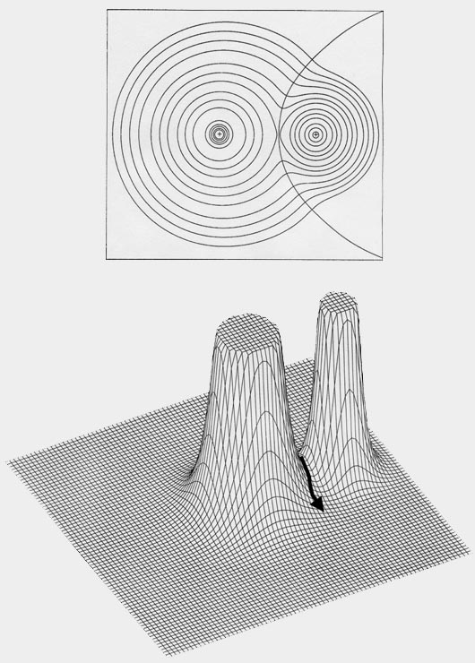
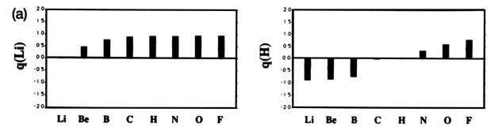
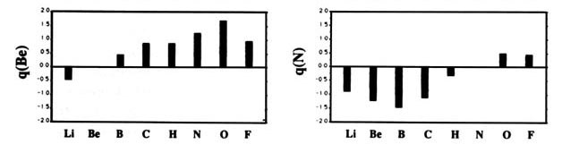
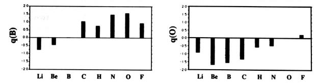
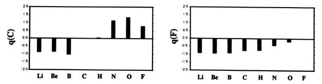
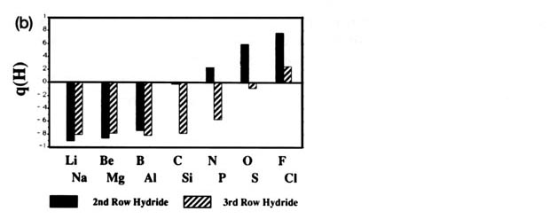

An Introduction to the Electronic Structure of Atoms and Molecules
Professor of Chemistry / McMaster University / Hamilton, Ontario
An Introduction to the Electronic Structure of Atoms and MoleculesProfessor of Chemistry / McMaster University / Hamilton, Ontario
|
Since the publication of this book in 1970, a theory of atoms in molecules (AIM) has been developed that enables one to define an atom in a molecule and all of its properties. The theoretical definition of an atom is based on the properties of the experimentally observable charge density. This theory is described elsewhere in this web site, but we present here a brief introduction to enable a quantitative definition of the charge on atom in a molecule. The theory is fully described and developed in the book "Atoms in molecules: a quantum theory", published by the University of Oxford Press, 1990.
A molecule, or a crystal, is partitioned into individual atoms in terms of surfaces that satisfy a particular condition on the electron density. The partitioning is a direct result of the density exhibiting a maximum at the position of each nucleus. As a consequence, the density passes through some minimum value before again attaining some maximum value at a neighbouring nucleus, as illustrated in the displays of the molecular density distributions shown in this book. This fundamental property of a charge distribution is illustrated in the accompanying figure, Fig. A1 which displays the electron density in a plane of the nuclei for the LiF molecule. The distribution is dominated by the two nuclear maxima. The point of minimum density along the line linking the two nuclei – the saddle point in the density – is a starting point for two paths of steepest descent away from this point, paths that define the boundary separating the atoms in this plane. The collection of such paths for all planes obtained by rotation about the axis defines the interatomic surface. The interatomic surfaces defined in this manner yield a ‘natural partitioning’ of a molecule into atoms, as illustrated in Fig. A1 for LiF and in Figures A2a and A2b for the second- and third-row diatomic hydrides.
The properties of the atoms defined by these ‘natural’ surfaces are
determined by quantum mechanics. Thus, not only does quantum mechanics
predict the properties of a molecule, it also predicts the properties of
its individual constituent atoms. The theory of atoms in molecules (AIM)
equates every property of a molecule to the sum of its atomic contributions.
Among the properties of immediate interest is the charge on an atom. The
electron population of an atom A - its average number of electrons - a
quantity denoted by N(A), is obtained by integrating the electron density
over the space of the atom up to its atomic boundaries, as given in equation
A-1
where the electron density at a point denoted by the position vector r
is denoted by r (r)
| A-1 |
|
| A-2 |
|
| A-3 |
|
The dipole moment m of a diatomic
molecule A-B, when expressed in terms of atomic contributions, is given
by a charge transfer term, equal to the charge on atom B multiplied by
R,
the vector distance from the nucleus of A and to that of B, and a polarization
term given by the sum of the two atomic moments. The dipole moment of A-B
is therefore given as in equation A-4
| A-4 |
|

Fig. A1. Top diagram is a contour map of
the electron density for the LiF molecule in a plane containing the nuclei.
The outer contour has the value 0.001 au and the remaining contours increase
in value as previously given. The boundary separating the basin of the
F atom on the left, from the Li aton on the right, is also indicated. It
is defined by the path of steepest descent from the point of minimum density
along the Li-F internuclear axis indicated in the relief map of the
density shown in the lower diagram.
Properties Determined by the Electronic Charge Density
Pauling (1960) defined electronegativity to be 'the power of an atom
in a molecule to attract electrons to itself.' This concept has proved
to be extremely useful and it is reflected in the net charges on the atoms
found in diatomic molecules, as determined by the theory of atoms in molecules.
The atomic charges in a diatomic molecule are a direct measure of the relative
abilities of the two atoms to attract and bind electronic charge within
their basins. The variation in the charge on atom A in AB where A and B
vary across the second row of the periodic table, Li ®
F and including hydrogen are displayed in Fig. A2





Fig. A2. (a) Bar graphs of the charges on the atoms in the ground states of the diatomic molecules AB where both A and B = Li, Be, B, C, H, N, O, F. This is the ordering of increasing electronegativity as determined by theory—all charges to the left of the position of the reference atom are negative, all those to its right are positive. (b) Bar graphs of the charge on hydrogen q(H), for the second- and third-row diatomic hydrides.
Each atom withdraws charge from elements to the left of it and donates charge to those on its right, with H appearing between C and N. The orderings are as anticipated with C and H possessing almost equal electronegativities. The electronegativity of C relative to H increases with the degree of unsaturation and with the extent of geometric strain. This result is anticipated on the basis of the orbital model which predicts the electronegativity of C to increase as the s character of its hybrid bonds to H increases. Most of the secondary variation in charges across the table are explicable in terms of the extent of charge transfer being limited by either the number of valence electrons on the donor or vacancies on the acceptor. The charges on the third-row elements Na ® Cl are also given relative to H in their hydrides and, as anticipated, H advances towards the electronegative end of the scale in this row relative to its position vis-à-vis the second-row elements. Unexpectedly, sodium and magnesium are slightly less electropositive than their second-row congeners.
The charge distributions of the second- and third-row hydrides are illustrated in Fig. A3a and b in the form of contour maps.
(b)
The extent and direction of charge transfer and its effect on the charge distribution are reflected in the behaviour of the interatomic surface which is indicated for each molecule. In LiH the surface envelops what is essentially a Li ion while in HF the total charge distribution is dominated by the forces exerted by the F nucleus. The charges q(H) of AH are also characteristic of the stable polyatomic species AHn the two values usually differing by less than 0.05 e, and they reflect the chemical behaviour of the hydrides. The hydrides of Li, Be, and B, for example, are all hydridic, expelling molecular hydrogen from water and, for all of these, q(H) < 0. There is a sharp break in the value of q(H) for methane for which q(H) » 0 and this is a faithful reflection of the non-polar nature of this molecule. It has a low solubility in water and does not dissociate. The remaining hydrides, NH3, H2O, and HF, are all increasingly polar with q(H) > 0 and the ordering of the charges accounts for the aqueous solution of ammonia being basic and that of HF being acidic.
The ability to determine the charge on an atom in a molecule
removes the necessity of defining a numerical electronegativity scale.
The concept, however, remains useful and one may use the atomic populations
to demonstrate that they recover the basic idea underlying electronegativity—to
predict the degree of charge transfer between two atoms. Since hydrogen
can either donate or accept but a single electron, the electron population
of hydrogen in AH may be used to define an electronegativity per electron
of A relative to hydrogen. This electronegativity is
given by X(A) = 1 - N(H)AH, where
N(H)AH
is the population of H in AH. A positive or negative value for X(A)
implies that A has a greater or lesser bonding electron affinity than does
hydrogen, respectively. If the X(A) are meaningful, then the difference
|X(A) - X(B)| should determine the charge transfer per valence
electron in AB. Using this concept, the population of A in AB is predicted
to be
|
|
The charge distributions of the diatomic hydrides illustrate a general phenomenon—that a significant degree of interatomic charge transfer is accompanied by a polarization of the valence densities of the atoms in a direction counter to that of the charge transfer. The polarizations are in response to the electric field created by the charge transfer, the acceptor atom polarizing towards the positively charged donor atom which is itself polarized away from the negatively charged acceptor. This polarization of the donor atom is particularly pronounced when it possesses a greater number of valence electrons than there are vacancies on the acceptor atom, as illustrated by the data for the diatomic hydrides given in Table A2. This Table lists the atomic quantities that determine the molecular dipole moment, as given in equation A-4; the charges on the atoms (equation A-2 for q(A)), the atomic polarizations (equation A-3 for M(A)), the charge transfer contribution to the molecular dipole moment under the heading m(CT) = q(H)R = - q(A)R, the dipole moment for each molecule m(AH) and the nonbonded radius of the A atom, rn(A).
In general, the magnitude of the molecular dipole is less than that m(CT), the charge transfer contribution, because of the opposing atomic polarizations. The polarizations of Li and Na in their hydrides are quite small as they correspond to tightly bound core densities. However, in some instances such as BH, the atomic polarizations determine the direction of the molecular moment. For the second row, the atomic polarizations are largest for the diffuse valence density on Be and B. They are larger still for their third-row congeners and Si where, because of the larger, 10-electron K-L core, the valence density is less tightly bound and more polarizable.
Attempts to assign atomic charges on the basis of measured dipole moments are unrealistic as such a procedure ignores the polarizations of the atomic densities. Such an attempt corresponds to assuming the molecular charge distribution to be composed of a set of spherically symmetric atomic densities, each centred on its own nucleus, a physically unacceptable model even in the limit of an ionic system. It should be evident from a comparison of the charge distribution in the non-bonded region of the A atoms that the reduction in magnitude or reversal in sign of the dipole moment, which occurs after LiH in the second-row and after Na in the third-row, is a consequence of an atomic polarization and is not indicative of a sudden increase in the electronegativity of the A atom. The extent of the physical distortion of those atoms for which the atomic polarizations are greatest is reflected in the values of their non-bonded radii. A non-bonded radius, rn(W), is defined as the axial distance from a nucleus to an outer contour of the charge density on its non-bonded side. The 0.001au contour is chosen since the corresponding density envelopes provide good approximations to the experimentally determined van der Waals sizes and corresponding radii for molecules in the gas phase. The non-bonded radii for Li and Na are close to the values for the corresponding singly-charged ions while those for the strongly back-polarized atoms are all considerably greater than are their values in the free atomic state.
The presence of such a large and diffuse (weakly bound) charge distribution has important chemical consequences, imparting to the molecule the characteristics of a strong Lewis base. A classic example of this behaviour is the carbon atom in the CO molecule. This molecule has a near-zero dipole moment because of very pronounced polarizations of the atomic densities, particularly that of carbon, which oppose the considerable charge transfer moment. The charge on oxygen is - 1.33 e and the magnitudes of the opposing atomic dipoles are |M(O)| = 0.98 au and |M(C)| = 1.72 au with the non-bonded radius on carbon exceeding its free atomic value by 0.15 au. The physical importance of the atomic polarization of carbon is reflected in the ability of CO to act as a Lewis base, particularly in the formation of metal carbonyls. The considerable difference in the electronegativities of C and O is reflected in the relatively large dipole moment, |m| = 1.11 au, of the formaldehyde molecule, H2C=O. The charge transfer from C to O in formaldehyde where q(O) = - 1.24 e, is only slightly less than it is in CO. Unlike CO, however, the charge transfer contribution dominates the final moment in formaldehyde because of the close to halving of the atomic dipole on carbon which results from the use of its non-bonded density in the formation of non-polar bonds to the hydrogen atoms.
 |
 |
 |
 |